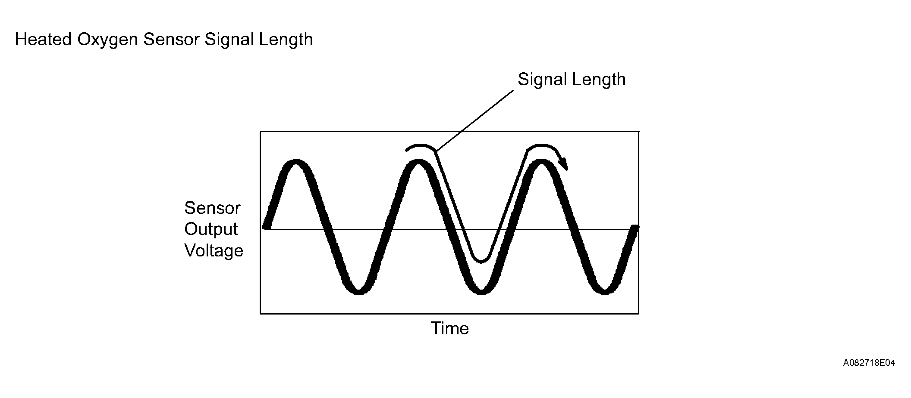

Monitor Description
The ECM uses the 2 Heated Oxygen (HO2) sensors, mounted in front of and behind the Three-Way Catalytic Converter (TWC), to monitor its efficiency.
The first sensor, Sensor 1, sends pre-catalyst information to the ECM. The second sensor, Sensor 2, sends post-catalyst information to the ECM. The ECM compares the information transmitted by these 2 sensors to determine the efficiency of the TWC performance and its ability to store oxygen.
When the TWC is functioning properly, the variation in the oxygen concentration in the exhaust gas, after it has passed through the TWC, is small. In this condition, the voltage output of sensor 2 slowly alternates between the rich and lean signal voltages (shown in the illustration below). As the TWC performance efficiency deteriorates, its oxygen storage capacity decreases, and the variation in the oxygen concentration in the exhaust gas increases. As a result, the sensor voltage output fluctuates frequently. While the catalyst monitor is running, the ECM measures the signal lengths of both sensors 1 and 2, and calculates the ratio of the signal lengths to determine the extent of the TWC deterioration. If the deterioration level exceeds the preset threshold, the ECM interprets this as the TWC malfunction. The ECM then illuminates the MIL and sets the DTC.
This monitor begins to run when the following preconditions apply:
- The engine has warmed up (the engine coolant temperature is 75°C [167° F] or more).
- The vehicle has driven at between 60 km/h and 100 km/h (37 mph and 63 mph) for 15 minutes.

Courtesy of © TOYOTA, LICENSE AGREEMENT TMS1002| DTC No. | DTC Detection Condition | Trouble Area |
|---|---|---|
| P0420 | Under conditions (a) and (b), front and rear Heated Oxygen (HO2) sensor voltage output fluctuation amplitudes similar:
|
|